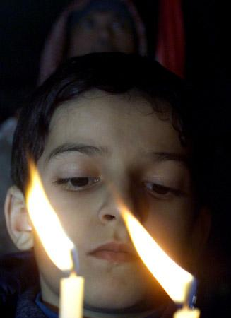

|
 Travel
in spirit and light a candle proclaiming your faith in a blessed future.
In the holy city of Bethlehem the city of hope and peace . your deep
and abiding faith in God's love will banish the darkness of fear. light a
candle in the Nativity church where Christ the living hope was born. Travel
in spirit and light a candle proclaiming your faith in a blessed future.
In the holy city of Bethlehem the city of hope and peace . your deep
and abiding faith in God's love will banish the darkness of fear. light a
candle in the Nativity church where Christ the living hope was born.
Hope illuminates our path to a brighter future. Hope is the
expectation of rebirth and the power of believing. Light a candle for the
oppressed and for world Peace
in the holy city of Bethlehem, the
place where the Living Hope was born. May you rekindle your own hopes and
courage and light a candle to bless the birth of the New year.
Peace
is the aspiration of every human person in the
world . Light a candle for peace in Bethlehem to show your faith in a
new way of living. May the peace that surpasses all human understanding
grant you a timeless serenity and inner harmony. Kindle your light for
peace of mind and for the peace of all humankind in the City of
Peace.
Friendship
is that wondrous dialogue of love we hold with those nearest and
dearest to us. Light a candle for friendship in the place where Jesus
was born for every loving intention you hold for your friends and
loved ones. May your loving friendships deepen and may your flame of friendship
burn brightly in Bethlehem.
Remembrance
of your loved ones is a lasting testimony to their lives. Continuing
their memory can ease the burden of carrying on without them in this
world. Light a candle of eternal remembrance for them in Bethlehem,
where eternal life was born. They have a share in eternity. May their
memory abide with you forever and bring you peace. Light a candle for
all the innocent victims of terrorist attacks.
Light
a candle in Bethlehem and express your pilgrim’s intention to be there
in spirit. Travel to the place where Christ was born by lighting a
candle for the Holy Nativity church in love.
Light a Nativity
Candle in Bethlehem as a present to those you love. Let the light of
freedom and peace shine on your new Year.
The
Church of the Nativity in Bethlehem ranks amongst the most important
Christian Holy Places throughout the Christian World - perhaps it is
even its holiest. Millions of Christians around the globe relate to
this place through the One, Jesus Christ, who was born here.
Throughout
the centuries, millions of Christians have visited the Holy Land
to affirm and deepen their faith. In the coming year, should peace
prevail, many more will make the journey. Should war continue, however,
please make your pilgrimage by having a candle lit for you or for your
loved ones at the Nativity Church where Jesus was born. Let us all pray
for peace in the Holy Land. Let us light thousands of candles this year
in Bethlehem, where Jesus, The Prince of Peace was born

Click here to Light a Candle Now
|